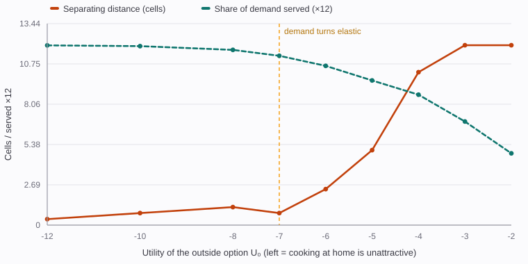
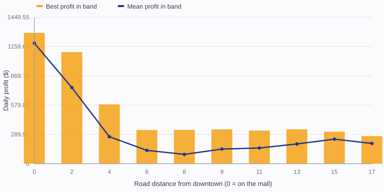
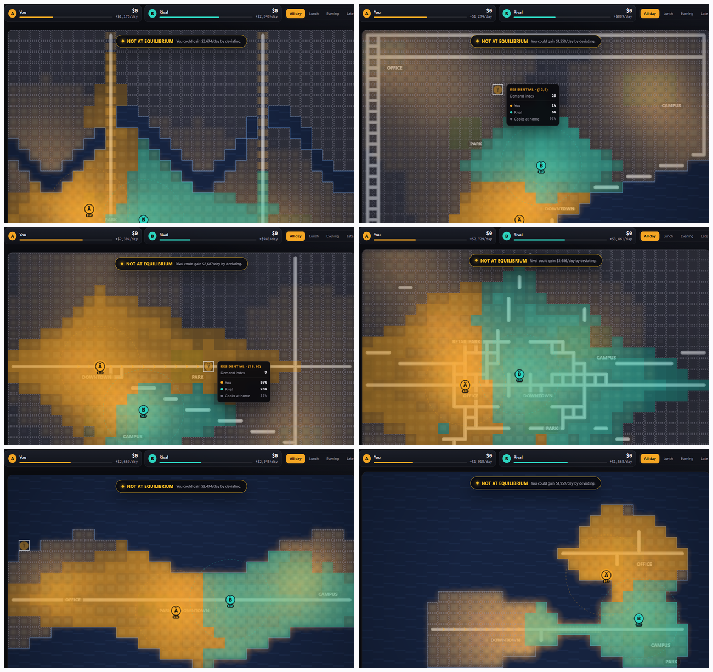

A playable study of Hotelling's location model, with seven real-world modifications
Two food trucks, one town, every diner free to stay home. HOTPLATE turns Hotelling's ice-cream-vendor problem into a game you can play in a browser, then uses the engine underneath it to reproduce the classic result and to show exactly which real-world wrinkles break it.
Hotelling's 1929 model is the cleanest result in location economics. Two vendors selling an identical product along a line of consumers with a constant travel cost will both walk toward the middle, no matter where they start. The town ends up with minimum differentiation: the two trucks parked back to back at the centre, splitting the market exactly in half, even though the socially efficient arrangement is for them to sit at the quartiles.
The result is also fragile, and that fragility is the interesting part. It depends on customers having nowhere else to go. Give a diner the option of cooking at home and the calculus reverses: the two vendors run apart to the edges to build distinct captive catchments, and the town gets maximum differentiation instead. Both regimes are real restaurant behaviour. Two coffee chains cluster on the same corner; a tasting-menu place and a burger van do not.
So the question this project answers is not "does Hotelling hold" but which of the assumptions doing the work are the ones that break in an actual town - and what that does to the equilibrium the vendors settle into.
U_j = quality_j - price_j - c · travel_j, with an outside option (cook at
home) carrying U₀. The logit scale parameter controls how choosy diners are,
and the outside option is what makes demand elastic or inelastic.(price - unit cost - commissions) · covers - fixed cost - rent.Each modification is a real-world feature that a naive Hotelling model omits. Each is implementable in the Lab as an independent toggle, so its marginal effect can be isolated (section 3.4).
| # | Modification | What it adds, and why it matters |
|---|---|---|
| 1 | 2-D demand, not a line | The town has a real two-dimensional demand surface with hot spots and quiet corners. Vendors can differentiate in direction, not just distance, which relaxes the one-dimensional squeeze that drives the classic result. |
| 2 | Price and product quality | Vendors choose a price and a quality tier rather than selling an identical good. Higher tiers cost more to run but attract pickier diners, so the game has a vertical dimension the original model lacks. |
| 3 | Rushing to the centre costs rent | Downtown maximises foot traffic and therefore volume, but land there carries an agglomeration rent that scales with proximity to the mall. This is the modification we most wanted to be a genuine trade-off rather than a trap, and section 3.2 shows it is: the best pitch in town sits just off the mall. |
| 4 | Delivery radius | A truck can widen its catchment beyond walking range, at the cost of platform commission and logistics. Delivery changes the effective travel cost of every diner inside the ring, so it interacts with differentiation directly. |
| 5 | Roads, bridges and one-way streets | Travel cost is a real shortest path over a weighted directed graph, not Euclidean distance. A river with two bridges and a one-way arterial makes some near cells expensive and some far cells cheap. |
| 6 | Customer loyalty | A habit parameter keeps a share of yesterday's custom regardless of today's offer. This introduces genuine dynamics: it rewards arriving first and makes the game path-dependent rather than a repeated one-shot. |
| 7 | Contestable market entry | Leave a large enough share of the town unserved for several days running and a chain opens a third outlet in the food desert. The threat disciplines the two incumbents. |
All numbers below come from running the shipped engine headlessly
(node build/measure.js), not from hand calculation. Where a figure averages over
towns, the seeds are listed.

U₀, with all seven modifications switched
off so the bare model is isolated. Mean of five town seeds, 30 best-response iterations
each. Left is inelastic demand; right is elastic.| U₀ | Separation (cells) | A's share | Demand served | Regime |
|---|---|---|---|---|
| -12 | 0.4 | 49.9% | 99.9% | Inelastic: vendors sit on top of each other |
| -8 | 1.2 | 49.9% | 97.4% | Inelastic |
| -6 | 2.4 | 49.7% | 88.5% | Turning point |
| -5 | 5.0 | 50.2% | 80.4% | Elastic: vendors begin to separate |
| -4 | 10.2 | 50.5% | 72.5% | Elastic |
| -2 | 12.0 | 50.0% | 39.9% | Wide open: distinct catchments |
U₀ between -6 and -5, where a small change in how attractive the outside option
is flips the market from clustering to spreading. That threshold, not the endpoints, is the
actual prediction a restaurateur cares about.
Modification 3 makes the centre expensive. The risk with modelling rent is that downtown becomes a strictly bad move, which would teach the player nothing. So we swept vendor A across all 704 legal pitches with every modification active and binned profit by road distance from the mall.

report-centre.The optimum sits 1.4 cells from the mall - the block or two adjacent to downtown, where foot traffic is still strong but the rent gradient has begun to fall away. Parking directly on the mall earns 94.9% of that. Beyond roughly six cells the market falls off a cliff: mean profit drops by about 80%, and no amount of clever positioning recovers it.
The classic model has a pure-strategy equilibrium. Real-world frictions often destroy it, and when they do, the "right answer" becomes a cycle rather than a point. We tested 40 procedurally generated towns with all modifications active:
| Outcome | Towns | Share | Reading |
|---|---|---|---|
| Verified pure-strategy Nash equilibrium | 35 | 87.5% | Best response settles somewhere stable |
| Reached a fixed point that is not a Nash equilibrium | 5 | 12.5% | Someone still has a profitable move; the game reports who and how much |
| Genuine cycling | 0 | 0% | No endless churn observed |
An 87.5% existence rate is the honest answer: adding real frictions makes the equilibrium harder to reach but does not make the game unstable. When no equilibrium exists, the UI does not hide it. It names the vendor who could profitably deviate and the size of the gain, which turns a gap in the theory into the most interesting moment in the game.
Each modification toggled on alone against the bare model, averaged over four town seeds. This is the table that says which features are load-bearing.
| Modification | Separation | Demand served | Avg price | Marginal effect |
|---|---|---|---|---|
| Bare model | 11.5 | 63.1% | $12.00 | - |
| 2-D demand | 11.0 | 70.1% | $12.00 | Opens up quiet corners, +7.0pp served |
| Price and quality | 9.0 | 60.8% | $19.13 | Prices up +59%, pulls vendors together |
| Delivery | 11.25 | 66.1% | $12.00 | Widens reach, +3.0pp served |
| Roads and one-way | 10.0 | 46.5% | $12.00 | Real travel costs cut coverage 16.6pp |
| Agglomeration rent | 1.75 | 67.3% | $12.00 | The single strongest force: -9.75 cells of separation |
| Loyalty (day 1) | 11.5 | 63.1% | $12.00 | Inert on day 1 by construction - see 3.5 |
| Entry (day 1) | 11.5 | 63.1% | $12.00 | Needs a run of desert days - see 3.5 |
Loyalty and entry both looked completely inert in the table above. That is not a bug: loyalty reads a memory of yesterday's custom, which is empty on day 1, and entry requires several consecutive days of a large unserved region. Both only exist across a campaign, so we measured them over a real 12-day run instead.
| Configuration (12 days, 6 towns) | A banks | Chain opens | Reading |
|---|---|---|---|
| Loyalty off, entry off | $31,458 | 0% | Baseline: pure repeated one-shot |
| Loyalty on, entry off | $38,648 | 0% | Habit pays whoever got there first, +22.9% |
| Loyalty on, entry on | $34,574 | 50% | The chain claws back $4,074 and appears in half the towns |
Two clean results. First, loyalty is a first-mover prize: it raises the incumbent's 12-day take by 22.9% because a habitual customer base is an asset the rival cannot bid away with a better offer on the day. Second, entry is a tax on complacency: letting a food desert fester summons a third outlet in half the towns and takes a visible bite out of both incumbents. Together they are what turn a static puzzle into a game with a clock on it.
No two games use the same town. Each seed generates an entire map from one of six layout archetypes, then layers optional quirks on top. The generator is a construct-stitch-verify pipeline: it builds terrain and roads, carves the leftover quirks, stitches any disconnected islands with causeways, and finally tests that the town is actually playable. A town that fails the test is discarded and regenerated from a derived seed, up to 24 attempts, with the archetype held fixed so the retry never changes what the player was promised.

| Archetype | Structure | Why it plays differently |
|---|---|---|
| Riverfront | Meandering river, two or three bridges | Bridges are chokepoints; the two banks are near-separate markets unless you pay to cross |
| Bay | Coastal crescent carved from a corner | Demand is packed along a shoreline arc, an almost one-dimensional problem bent around a bay |
| Twin cities | Two cores joined by a highway | Splitting the cores is often better than fighting over one; the highway is the only cheap link |
| Downtown | Ring road, four to six radials, central mall | Maximum traffic and maximum rent; the purest test of the centre trade-off |
| Gorge | Long narrow strip of land | Collapses to nearly one-dimensional Hotelling, so the classic result dominates here |
| Archipelago | Three or four islands plus causeways | Very small action set; one island is a local monopoly if you get there first |
On top of the archetype, each town independently rolls optional features: an out-of-town retail park that drags demand away from the centre, a green belt that blocks a corridor, a diagonal boulevard, an eastbound one-way stretch, and extra demand blobs. Two towns of the same archetype can therefore play very differently.
Validation over 300 seeds: every generated town is fully connected (no stranded islands, no unreachable demand), the six archetypes appear near-uniformly, and the number of legal pitches varies by a factor of 3.8 across towns. That spread matters: it means the size of the strategic problem itself is part of the variety, not just its appearance.
Three modes share one engine. Campaign pits the player against an AI rival with a selectable personality (Optimizer, Undercutter, Premium Snob, Copycat), over 7, 14, 30 or unlimited days. Duel is hot-seat play for two people on one keyboard. Lab is a sandbox that exposes all seven modifications as toggles plus the loyalty parameter, for hunting the equilibrium by hand.
Every hint the game offers is a real counterfactual: the engine saves the state, applies the candidate move, evaluates it, restores the state, and only shows the suggestion if the gain is genuine. Nothing in the advice panel is hard-coded. After each day the game also runs a Nash check and, when the map is not at equilibrium, names the player who could profitably deviate and by how much.
Hotelling's minimum-differentiation result is usually taught as a curiosity: two ice-cream vendors crowding the middle of a beach. Building it as a game made it clear which assumptions are load-bearing and which are decoration. The clustering result survives only while customers have no outside option; give them the ability to stay home and the vendors run apart. But the effect that actually dominates in a real town is rent. An agglomeration gradient at the centre pulls competitors back together by nearly ten cells, an order of magnitude more than any consumer-side change we tested, and it does so while keeping downtown a near-optimal move rather than a trap.
The result we did not expect is how cleanly loyalty and entry split into a prize and a tax. Habit rewards the incumbent who gets there first, raising a 12-day take by 22.9%; a contestable market punishes that incumbent if they get lazy, returning a visible share of it to a third entrant. Neither effect exists in a one-shot model, and neither is visible at all unless you play the campaign out over time. That, more than the clustering result itself, is what the interactive version adds.